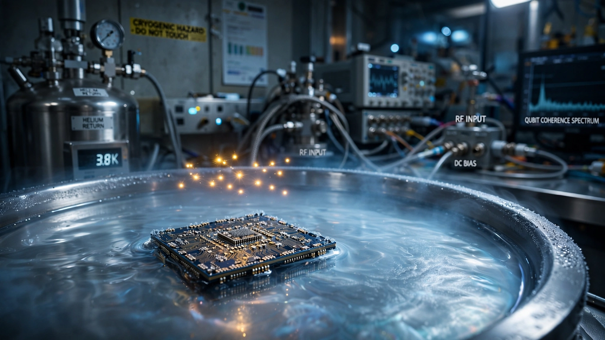

A 16-Person Startup Just Proved the Seventh Way to Build a Quantum Computer. It Uses Electrons Floating on Liquid Helium.
EeroQ’s Nature Physics paper demonstrates the first physical electron-on-helium qubit, turning a 27-year-old theoretical proposal into working hardware. The chip is thumbnail-sized, CMOS-compatible, and the company has already shown it can shuttle electrons with zero detectable loss across a billion repetitions. The six incumbents have spent tens of billions of dollars and still top out at roughly a thousand qubits. EeroQ claims its architecture reaches a million with fewer than 50 wires.

Sixteen employees. One chip the size of a thumbnail. A single electron, suspended in vacuum a few nanometers above the surface of superfluid liquid helium, coupled to a microwave photon strongly enough for the quantum information to flow back and forth between them. That is what EeroQ, a Chicago startup founded in 2017, just demonstrated in a paper published in Nature Physics on June 16, 2026. It is the first time anyone has physically realized an electron-on-helium qubit, a concept that existed only in theory for 27 years, and it establishes a seventh viable approach to building a quantum computer alongside the six that have collectively absorbed over $40 billion in investment without yet producing a commercially useful machine.
That number — seventh — matters more than it sounds. IBM, Google, Microsoft, Amazon, Intel, and Honeywell are all committed to approaches that, despite extraordinary engineering, have hit severe scaling walls. Nobody has broken past roughly 1,100 physical qubits on a superconducting chip. Quantinuum’s trapped-ion processor reached 98 qubits in a recent Nature paper. Atom Computing crossed the 1,000-qubit threshold with neutral atoms in 2023, then raised over $300 million on June 16, 2026 — the same day EeroQ published its paper. All six approaches require cooling hardware to around 10–15 millikelvin, or roughly −273.14°C. The refrigerators that reach those temperatures cost millions, consume kilowatts, and become engineering nightmares the moment you try to scale.
What EeroQ Actually Did
The physics is simple enough to explain over coffee, and strange enough to keep you there. Cool liquid helium below 2.17 Kelvin and it becomes a superfluid: zero viscosity, zero surface roughness, a mirror-flat quantum liquid. Place an electron near the surface and the helium’s dielectric properties trap it there, hovering in vacuum just nanometers above the liquid. The electron is bound vertically but free to move horizontally, sliding frictionlessly across the helium surface like a hockey puck on impossibly smooth ice.
The quantized motion of that trapped electron — its discrete energy states — becomes the qubit. But a single electron floating on helium has been observed before. What EeroQ demonstrated for the first time is strong coupling between the electron’s charge qubit state and a microwave photon inside a superconducting resonator, the fundamental building block required to read, write, and manipulate quantum information. Without this coupling, you have an interesting physics experiment. With it, you have a quantum computing platform.
“For over 25 years, electrons on helium have been identified as a uniquely promising qubit platform, but until now, no one had demonstrated the ability to couple to an actual electron qubit state in this system,” said Nick Farina, co-founder and CEO of EeroQ. “Our result changes that, and it’s just the beginning. It opens the door to an even more powerful qubit, based on the electron’s spin magnetism that we believe will outperform anything available today.”
A 27-Year Journey from Bell Labs to a Chicago Basement
The theoretical proposal arrived in 1999. Researchers at Bell Labs and Michigan State University published in Science the idea that electrons on helium could serve as qubits with exceptional properties. Princeton professor Stephen Lyon, now EeroQ’s CTO, expanded the framework in subsequent years. The physics community took note and theoretical papers accumulated, but nobody built one.
The reason was practical, not fundamental. Trapping and controlling individual electrons requires precise microfabricated electrodes, sub-Kelvin cryogenics, and superconducting microwave circuits — technologies that simply did not exist at the required quality in 1999. By the time they did, the quantum computing industry had already committed billions to superconducting circuits and ion traps. EeroQ was founded in 2017 and spent five years doing R&D before raising its first institutional round: a $7.25 million seed in August 2022 led by B Capital’s Ascent Fund. The company has since raised additional later-stage venture capital and attracted a collaboration with Microsoft and a deepening investment from SEALSQ, the semiconductor security firm that has committed to leading EeroQ’s next priced financing round.
The Wire Problem That Kills Every Other Approach
Here is the calculation that makes quantum computing investors lose sleep. A useful, fault-tolerant quantum computer likely needs millions of physical qubits. IBM’s most advanced processor, Condor, has 1,121. Each superconducting qubit requires individual control wires routed from room-temperature electronics down into the cryostat. The heat load from those wires fights the refrigerator’s ability to maintain millikelvin temperatures. This is the “wire problem,” and it is one of the central engineering bottlenecks in the field.
EeroQ’s architecture addresses it with an elegance that borders on unfair. In January 2026, the company published in Physical Review X a demonstration of CCD-style electron shuttling across a CMOS-compatible chip. Electrons are moved in packets, routed through 128 transport microchannels linking storage and sensing zones in a two-dimensional plane. The shuttling sequences were repeated at least a billion times with no detectable electron loss. Critically, the entire architecture requires fewer than 50 physical control lines to manage approximately one million electrons.
Fifty wires. A million qubits. For comparison, IBM’s roadmap envisions scaling to 100,000 qubits by the end of the decade, and the wiring challenge at that scale is considered one of the hardest unsolved problems in quantum engineering.
| Approach | Leading Player(s) | Max Qubits Demonstrated | Operating Temp | Wiring Complexity |
|---|---|---|---|---|
| Superconducting | IBM, Google, Amazon | ~1,121 | ~10–15 mK | ~1 wire per qubit |
| Trapped ion | Quantinuum, IonQ | 98 | Room temp (vacuum) | Complex laser systems |
| Neutral atom | Atom Computing, QuEra | ~6,100 atoms | Near absolute zero | Optical tweezer arrays |
| Photonic | PsiQuantum, Xanadu | Varies | Room temp (some) | Waveguide routing |
| Silicon spin | Intel | ~12 | ~1 K | ~1 wire per qubit |
| Topological | Microsoft | ~8 (logical) | ~10 mK | Specialized materials |
| Electron on helium | EeroQ | 1 (first demo) | >1 K | <50 for ~1M qubits |
The Temperature Advantage Nobody Talks About
In a separate result published in Physical Review X in late 2025, EeroQ demonstrated that individual electrons could be trapped and controlled at temperatures above 1 Kelvin — roughly 100 times warmer than what superconducting qubits demand. This is not just a convenience; it fundamentally changes the scaling math. Dilution refrigerators that reach 10 millikelvin cost $500,000 to $2 million each and have limited cooling power at those temperatures. At 1 Kelvin, the engineering is dramatically simpler, the cooling capacity is orders of magnitude higher, and the heat budget for control electronics relaxes considerably.
“This breakthrough confirms that electron-on-helium qubits can potentially be manipulated and read out at higher temperatures than previously thought possible, reducing a key barrier to scalable quantum computing,” said Johannes Pollanen, EeroQ co-founder and chief science officer.
What This Does Not Prove
Strong coupling to one electron is not a computer. It is the equivalent of lighting the first transistor in 1947: a proof that the physics works, not a demonstration that you can build a processor. EeroQ has shown exactly one qubit. It has not demonstrated two-qubit gate operations, which are the fundamental building block of quantum logic. Without gates, there is no computation. Without computation, the comparison to platforms running real algorithms on hundreds of qubits is aspirational.
The company’s stated strategy is to perfect single-qubit and then two-qubit operations before scaling, rather than racing to high qubit counts with mediocre gate fidelities. According to Quantum Computing Report, EeroQ plans to demonstrate gate operations as its next milestone, then scale rapidly to 10,000 qubits or more because it will not need to simultaneously improve both qubit count and qubit quality. That is a plausible strategy, not a demonstrated one.
The charge qubit EeroQ demonstrated is also explicitly not the company’s endgame. The charge state serves as a readout mechanism for the electron’s spin qubit, which is expected to offer significantly better coherence times. But the spin qubit has not been demonstrated either. We are looking at the first step of what EeroQ describes as a multi-step roadmap, and every step carries nontrivial risk.
The strongest counterargument against EeroQ’s significance is simply this: it is one qubit, from one company, with 16 employees and maybe $20 million in total funding, entering a race where IBM has spent billions and Google just announced it will pursue both superconducting and neutral atom approaches because even the world’s most well-resourced quantum lab does not want to bet on a single modality. The incumbents have ecosystems: software stacks, cloud access platforms, thousands of academic collaborators, and hardware that runs actual circuits today. EeroQ has a resonator with one electron on it.
Why One Electron Might Matter More Than a Thousand
The counterargument to the counterargument is that every quantum computing platform in history went through this exact stage — first qubit, first gate, first error correction, first useful circuit — and the platforms that scaled fastest were the ones whose physics was most naturally suited to manufacturing at scale. Superconducting qubits are manufactured in custom fabs with exotic materials and strict contamination controls. Ion traps require complex vacuum systems and laser arrays that become nightmarishly difficult to scale. Neutral atoms need thousands of precisely aligned optical tweezers.
EeroQ’s electrons float on helium above a chip that is manufactured using standard CMOS processes — the same semiconductor fabrication that produces the processors in every smartphone and laptop on Earth. TSMC, Samsung, and Intel already operate these fabs at enormous scale. If the qubit quality holds as the system scales, EeroQ does not need to build a fab. It needs a purchase order.
That is why Microsoft, which has its own topological qubit program and a collaboration with Atom Computing, is also working with a 16-person company in Chicago. The upside case for electron-on-helium is not incremental. It is a category break: a qubit platform that inherits the entire semiconductor industry’s manufacturing infrastructure, operates at comparatively warm temperatures, and has a demonstrated path to extreme wiring efficiency.
The Bottom Line
A qubit that existed only in theoretical proposals for 27 years is now physical hardware, published in Nature Physics, and validated by peer review. It is exactly one qubit. It cannot yet perform logic operations. It has not been entangled with another qubit. But it offers something the other six approaches do not: a clear line of sight to CMOS manufacturing, a demonstrated billion-cycle electron shuttle with zero loss, a wiring architecture that scales to a million qubits on fewer connections than your home router uses, and an operating temperature 100 times warmer than the competition requires.
If you are an investor evaluating quantum computing stocks, understand that the public companies in this space — IonQ (IONQ), D-Wave (QBTS), Quantinuum’s forthcoming IPO — are pursuing approaches with known scaling limits that EeroQ’s architecture sidesteps entirely, though EeroQ itself is years behind on demonstrated capability. Watch for their two-qubit gate result as the next proof point; that is the milestone that separates a physics demonstration from a computing platform. If you work in semiconductor manufacturing, the CMOS compatibility claim is the detail worth tracking: a quantum computing platform that fits into existing fabs changes the economics of the entire industry. If you are a quantum researcher, the Nature Physics paper and the Physical Review X shuttling paper are the two documents to read. The theory is now experiment. What happens next depends on whether the gates work.